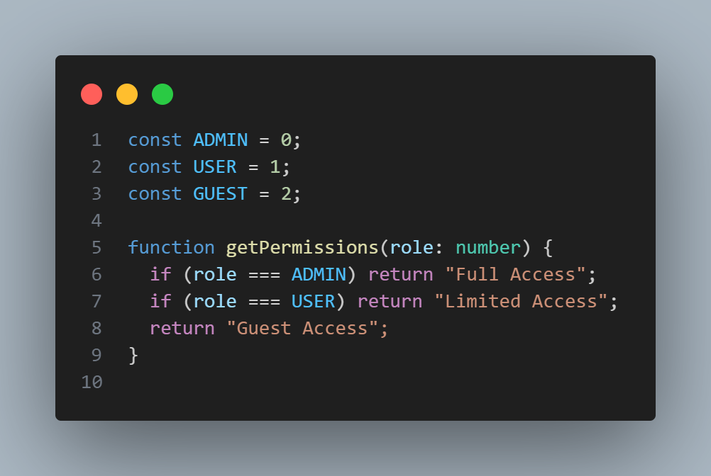

Enums in Typescript are a way to define named constants to numbers for better code readability and organization
Suppose we call an API that returns the role in the form of number for example 0 stands Admin, 1 Guest and so on.
In the below screenshot, we have a function called getPermission that returns the role as string based on the backend field. The function accepts an argument called role which is of number type

Enums prevent passing out-of-range values without having to create a custom type alias. Makes readable possible but replacing the number with the keywords during runtime checks.